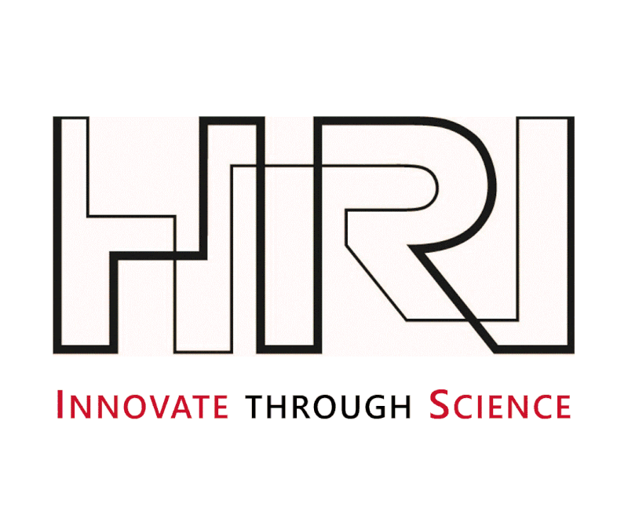
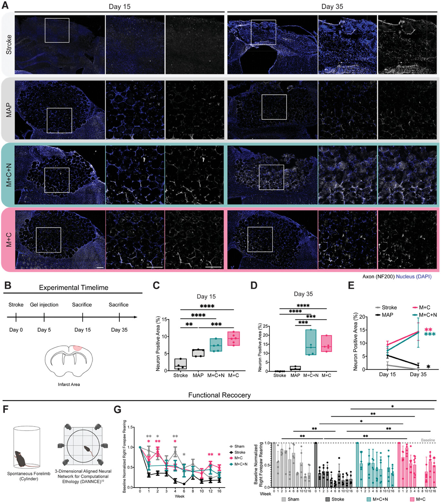
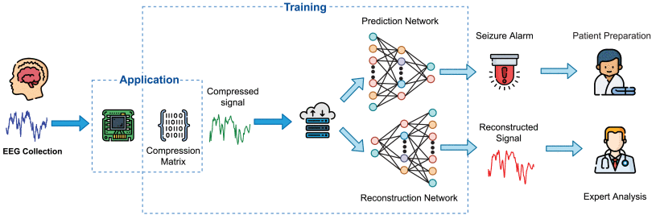
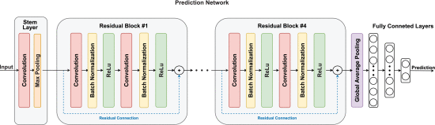

PhD Applied Research Intern, Honda Research Institute
Designing a video representation learning framework for long videos via a self-supervised learning (SSL) pipeline.
Focus on Machine Learning • Expected Graduation 2027
I'm a PhD Candidate from Duke University in Tim Dunn Lab. My research focuses are human behavior analysis, which involves computer vision, 3D pose estimation and NLP.
I'm actively looking for internship in 2026 summer, including machine learning engineer and research scientist in related field. I am also interested in software engineer roles as I am also pursuing a concurrent master degree in ECE.


Designing a video representation learning framework for long videos via a self-supervised learning (SSL) pipeline.
Computer Vision • 3D Pose Estimation • LLM Integration • Video Processing
Developing computer vision-based pipeline using pose estimation models for automated semiology detection in clinical video data. Building a multi-modal system that integrates pose estimation, imaging processing and large language model to predict surgery outcome.
LLM • RAG • Prompt Engineering
Built an LLM tool using Qwen-3 to extract insights from arXiv papers via single paper summarization or multi-document RAG-augmented summarization. Integrated semantic chunking, BAAI/bge-small-en embeddings, FAISS search, and structured prompts for targeted summarization.
Computer Vision • 3D Pose Estimation • Computational Ethology
Applied 3-Dimensional Aligned Neural Network for Computational Ethology (DANNCE) to quantify behavioral deficits in stroke models. Trained deep learning models achieving automated skeleton detection and stroke/healthy classification with kinematic feature analysis.
Data Compression • Deep Learning • Signal Processing
Developed joint compression-classification network using ResNet architecture for EEG seizure prediction. Implemented adaptive reconstruction module with under variable compression ratios for enhanced prediction accuracy.
RESTful API • Cloud Server • Database Integration • GUI Design • Unit Test
Built virtual machine-based RESTful API server and client with persistent database integration. Developed client GUI and monitor-end GUI applications for medical record and real-time patient monitoring.
SwiftUI • UIKit • iCloud • Firebase • Sakai API • Mobile App Development
Designed multi-view iOS/WatchOS mobile application for deadline management using SwiftUI and UIKit. Integrated cross-device real-time synchronization via iCloud and Firebase, with Sakai API integration for automatic course assignment deadlines.

Co-authored research on angiogenic therapy applications using hyaluronic acid scaffolds for tissue engineering applications. Contributed to the treatment effect evaluation.


Novel compression-classification network architecture for epilepsy seizure prediction using EEG data with adaptive reconstruction modules.
Advanced behavioral profiling methodology using 3D neural networks for computational ethology in stroke research models.
Submitted manuscript on explainable multi-scale modeling for quantitative assessment of Parkinson’s disease progression.
I'm always interested in new opportunities and collaborations. Whether you have a project in mind or just want to chat about research, feel free to reach out!
Have a question or want to work together? Drop me a line!
Ready to collaborate or have questions about my research? I'd love to hear from you!
📧 Email Me Directlysophie.shi[at]duke.edu